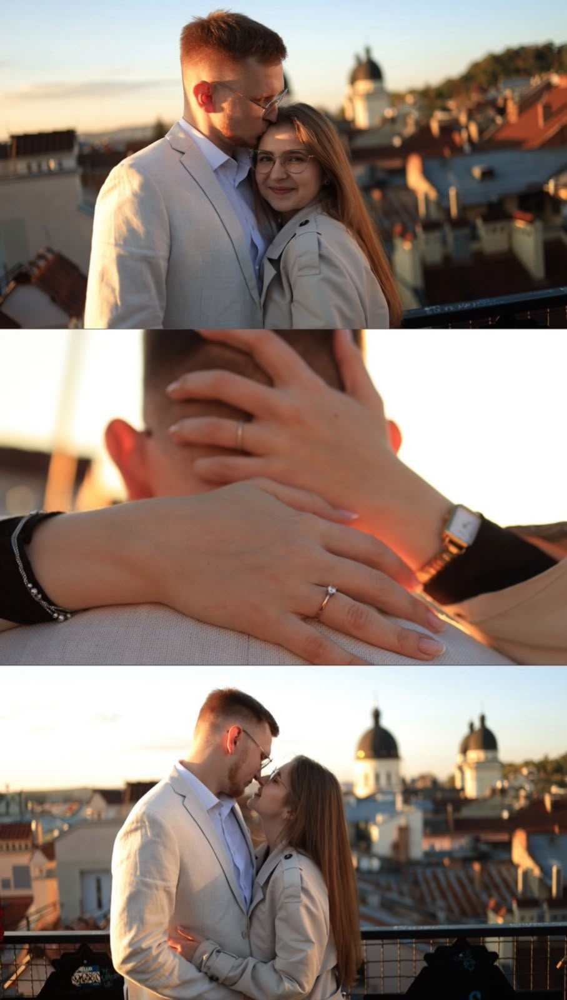
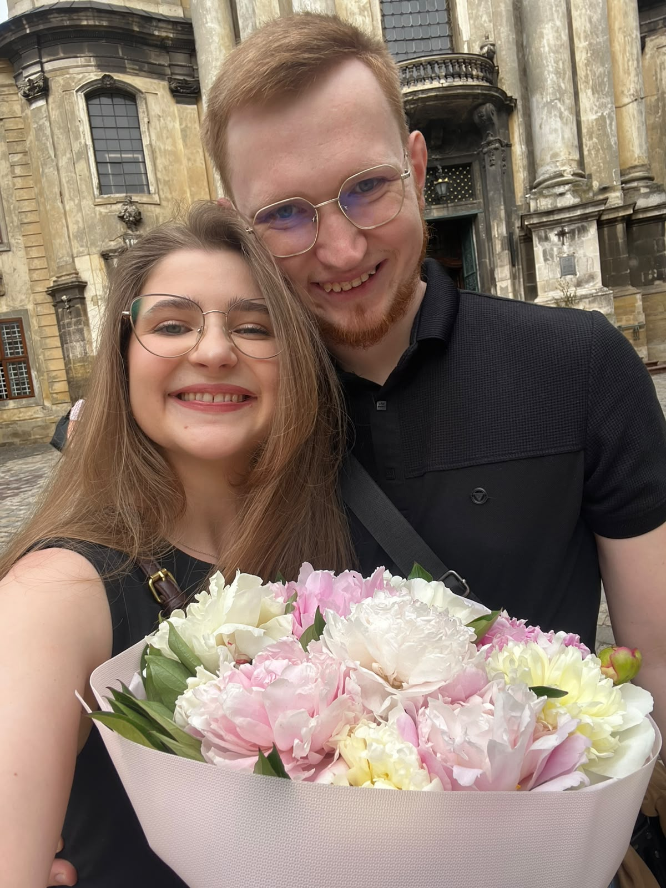

Весільна церемонія
11:45 · Храм Пресвятої Євхаристії
м. Львів, Рясне-2
вул. Івана Величковського, 1
Відкрити на карті ↗
ЄВГЕНІЙ · ХРИСТИНА 11.09.2027
Натисніть на конверт, щоб відкрити запрошення ⌄

НАШ ОСОБЛИВИЙ ДЕНЬ
У нашому житті починається новий розділ, і ми хочемо розділити цю мить із вами.
Запрошуємо вас відсвяткувати день, коли дві історії стануть однією. Ваша присутність зробить його по-справжньому незабутнім.
З любов’ю, Євгеній та Христина

ДО ПОЧАТКУ ЦЕРЕМОНІЇ ЗАЛИШИЛОСЬ
11 · 09 · 2027
НАШ ОСОБЛИВИЙ ДЕНЬ
Субота, 11 вересня 2027 року
Початок нашого святкового дня
Особлива мить перед церемонією
11:45 · Храм Пресвятої Євхаристії
м. Львів, Рясне-2
вул. Івана Величковського, 1
Відкрити на карті ↗
13:00 · Ресторан «Мускат»
вул. Яворівська, 58А
селище Івано-Франкове, Львівська область
Відкрити на карті ↗
Будемо раді святковим образам
у ніжних, природних відтінках
МИТІ, ЯКІ МИ БЕРЕЖЕМО


RSVP
Будь ласка, повідомте, чи зможете розділити з нами цей день.
З ЛЮБОВ’Ю
Євгеній & Христина
11.09.2027